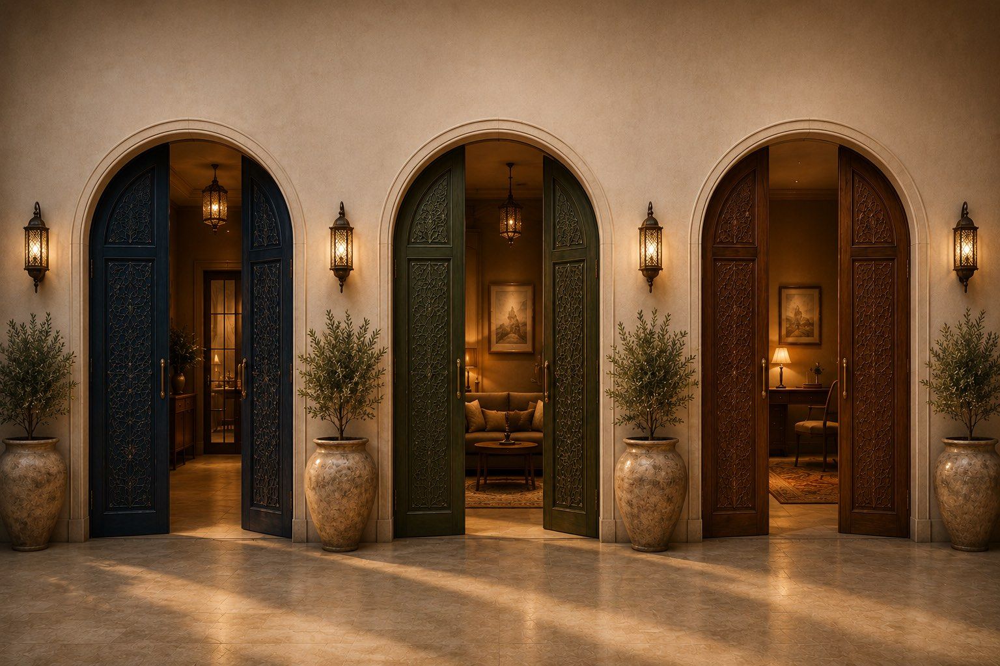

الغرف الثلاث كجدارٍ واحدvariant2.html
ثلاثة أبوابٍ مصوّرة مرصوفة في جدارٍ متّصل. اختيارُ بابٍ يوسّعه ويُعتِم جارَيه — فتؤدّي الصفحة ما يَعِد به النص. الحركة كلّها على طبقة العرض وحدها.
الإخراج الفني
ثلاث غرفٍ مصوّرةvariant-a-doors.html
الصور الثلاث تصبح هي الغرف، والخدمات الثماني خلفها. عرض البنك محدود بـ ١٠٤٠ بكسل حتى يبقى القوس كاملًا بلا اقتصاص، واسم الغرفة محفورٌ على الباب فوق تعتيمٍ مقيس.
التنقّل
ردهة الأبوابvariant-b-lobby.html
ممرٌّ من خمسة أبوابٍ تحت الواجهة مباشرة: الغرف الثلاث، ثم المنهج والسياسات. الغرف مُصوّرة والمجالات ليست كذلك — تمييزٌ مقصود. ولكل غرفةٍ رابطٌ مباشر.
النسخة المختصرة
النسخة المختصرةvariant-c-lean.html
ردٌّ مباشر على ملاحظة المحامي بكثرة التوسّع: قسمٌ كامل محذوف، وأربع فقرات مختصرة، وزرّ التواصل انتقل إلى الشريط العلوي، والخدمات الثماني صارت أبوابًا تُفتح بلوحة المفاتيح.